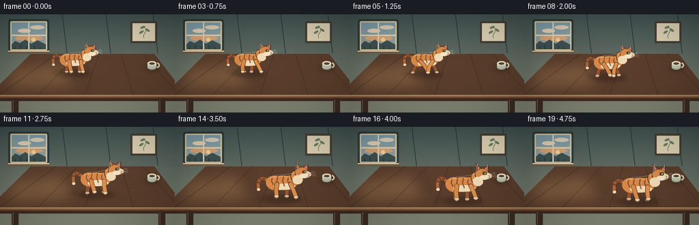

CODING AGENTS AS PIXEL WORLD MODELS
traex/DeepSeek-V4.1-Flash · dynamic_spatial_relationship_0010
点击播放 · 原生 RGB 像素
逐轮保存的候选
回放视频、检查图与代码变化。
每份候选均可单独播放。实际图片检查记录在下方工具轨迹中。
候选 01播放与检查图
点击播放 · 原生 RGB 像素

展开代码变化
--- 上一保存版本
+++ 本次保存版本
@@ -0,0 +1,488 @@
+from __future__ import annotations
+
+import math
+from pathlib import Path
+
+import numpy as np
+from PIL import Image, ImageDraw, ImageFilter
+
+from artifact_io import save
+
+
+W, H = 256, 144
+N, FPS = 20, 4.0
+SS = 4
+IW, IH = W * SS, H * SS
+CASE_DIR = Path(__file__).resolve().parent
+
+
+def clamp(value: float, low: float = 0.0, high: float = 1.0) -> float:
+ return max(low, min(high, value))
+
+
+def smoothstep(value: float) -> float:
+ value = clamp(value)
+ return value * value * (3.0 - 2.0 * value)
+
+
+def mix(a, b, amount: float):
+ return tuple(int(round(x + (y - x) * amount)) for x, y in zip(a, b))
+
+
+def rgba(color, alpha=255):
+ return (*color[:3], int(alpha))
+
+
+def sp(point):
+ return (round(point[0] * SS), round(point[1] * SS))
+
+
+def ellipse_points(cx, cy, rx, ry, angle=0.0, count=48):
+ c, s = math.cos(angle), math.sin(angle)
+ points = []
+ for i in range(count):
+ theta = 2.0 * math.pi * i / count
+ x, y = rx * math.cos(theta), ry * math.sin(theta)
+ points.append((cx + x * c - y * s, cy + x * s + y * c))
+ return points
+
+
+def screen_points(points):
+ return [sp(point) for point in points]
+
+
+def rounded_line(draw, points, fill, width):
+ if isinstance(draw, Image.Image):
+ draw = ImageDraw.Draw(draw, "RGBA")
+ pts = screen_points(points)
+ width_px = max(1, round(width * SS))
+ draw.line(pts, fill=fill, width=width_px, joint="curve")
+ radius = width_px / 2
+ for x, y in (pts[0], pts[-1]):
+ draw.ellipse((x - radius, y - radius, x + radius, y + radius), fill=fill)
+
+
+def polygon(draw, points, fill):
+ draw.polygon(screen_points(points), fill=fill)
+
+
+def ellipse(draw, box, fill, outline=None, width=1):
+ if isinstance(draw, Image.Image):
+ draw = ImageDraw.Draw(draw, "RGBA")
+ x0, y0, x1, y1 = box
+ draw.ellipse(
+ (round(x0 * SS), round(y0 * SS), round(x1 * SS), round(y1 * SS)),
+ fill=fill,
+ outline=outline,
+ width=max(1, round(width * SS)) if outline else 1,
+ )
+
+
+def cubic_bezier(p0, p1, p2, p3, count=40):
+ points = []
+ for i in range(count):
+ t = i / (count - 1)
+ u = 1.0 - t
+ points.append(
+ (
+ u**3 * p0[0] + 3 * u * u * t * p1[0] + 3 * u * t * t * p2[0] + t**3 * p3[0],
+ u**3 * p0[1] + 3 * u * u * t * p1[1] + 3 * u * t * t * p2[1] + t**3 * p3[1],
+ )
+ )
+ return points
+
+
+def gradient_image(top, bottom):
+ y = np.linspace(0.0, 1.0, IH, dtype=np.float32)[:, None, None]
+ top_arr = np.array(top, dtype=np.float32)[None, None, :]
+ bottom_arr = np.array(bottom, dtype=np.float32)[None, None, :]
+ array = top_arr * (1.0 - y) + bottom_arr * y
+ array = np.repeat(array, IW, axis=1)
+ return Image.fromarray(np.clip(array, 0, 255).astype(np.uint8), "RGB")
+
+
+def make_background():
+ image = gradient_image((67, 84, 82), (133, 137, 119)).convert("RGBA")
+ draw = ImageDraw.Draw(image, "RGBA")
+
+ # Broad window light on the wall.
+ light = Image.new("RGBA", (IW, IH), (0, 0, 0, 0))
+ ld = ImageDraw.Draw(light, "RGBA")
+ polygon(ld, [(4, 50), (75, 47), (116, 92), (11, 119)], (255, 220, 164, 27))
+ light = light.filter(ImageFilter.GaussianBlur(18 * SS))
+ image.alpha_composite(light)
+ draw = ImageDraw.Draw(image, "RGBA")
+
+ # Soft vertical wallpaper seams.
+ for x in (91, 155, 224):
+ draw.line(sp((x, 0)) + sp((x + 7, 57)), fill=(37, 55, 55, 20), width=SS)
+
+ # Window recess and frame.
+ draw.rounded_rectangle(
+ (*sp((12, 7)), *sp((72, 56))), radius=3 * SS, fill=rgba((49, 60, 58), 255)
+ )
+ draw.rounded_rectangle(
+ (*sp((15, 10)), *sp((69, 53))), radius=2 * SS, fill=rgba((213, 199, 165), 255)
+ )
+ sky = gradient_image((124, 157, 169), (234, 178, 129))
+ sky = sky.crop((0, 0, round(50 * SS), round(39 * SS)))
+ image.paste(sky, sp((17, 12)))
+
+ # Distant sunset shapes inside the window.
+ sd = ImageDraw.Draw(image, "RGBA")
+ ellipse(sd, (22, 31, 63, 39), (217, 164, 119, 155))
+ ellipse(sd, (26, 21, 45, 27), (226, 210, 184, 95))
+ ellipse(sd, (44, 16, 65, 22), (218, 205, 184, 75))
+ ellipse(sd, (46, 34, 52, 40), (244, 210, 147, 235))
+ polygon(sd, [(17, 44), (22, 39), (29, 42), (37, 37), (46, 43), (55, 38), (67, 44), (67, 51), (17, 51)],
+ (62, 81, 81, 205))
+ for x, h in ((21, 3), (29, 5), (38, 3), (49, 4), (58, 2)):
+ draw.rectangle((*sp((x, 50 - h)), *sp((x + 2, 51))), fill=rgba((48, 65, 66), 230))
+
+ # Window mullions and sill.
+ draw.rectangle((*sp((41.2, 12)), *sp((43.0, 51))), fill=rgba((224, 211, 180), 255))
+ draw.rectangle((*sp((17, 29.8)), *sp((67, 31.8))), fill=rgba((224, 211, 180), 255))
+ draw.rectangle((*sp((11, 53)), *sp((73, 57))), fill=rgba((112, 91, 70), 255))
+ draw.rectangle((*sp((12, 53.2)), *sp((72, 54.4))), fill=rgba((235, 218, 180), 220))
+
+ # Small framed print on the right wall.
+ draw.rounded_rectangle(
+ (*sp((191, 10)), *sp((230, 42))), radius=1.5 * SS, fill=rgba((70, 62, 53), 255)
+ )
+ draw.rectangle((*sp((194, 13)), *sp((227, 39))), fill=rgba((222, 210, 180), 255))
+ stem = cubic_bezier((211, 35), (207, 28), (218, 27), (211, 17))
+ rounded_line(draw, stem, rgba((93, 117, 91), 235), 0.8)
+ for center, angle in (((207, 26), -0.55), ((216, 23), 0.55), ((209, 19), -0.35)):
+ ellipse_points_local = ellipse_points(center[0], center[1], 3.7, 1.65, angle)
+ polygon(draw, ellipse_points_local, rgba((108, 128, 99), 225))
+
+ return image
+
+
+TABLE_POINTS = [(45, 58), (226, 58), (273, 119), (-17, 119)]
+
+
+def make_table(base):
+ image = base.copy()
+ table = Image.new("RGBA", (IW, IH), (0, 0, 0, 0))
+ td = ImageDraw.Draw(table, "RGBA")
+ polygon(td, TABLE_POINTS, rgba((91, 62, 44), 255))
+
+ # Warm reflected light falls across the near-left portion of the tabletop.
+ glow = Image.new("RGBA", (IW, IH), (0, 0, 0, 0))
+ gd = ImageDraw.Draw(glow, "RGBA")
+ polygon(gd, [(7, 72), (95, 63), (121, 113), (3, 119)], (248, 194, 127, 54))
+ glow = glow.filter(ImageFilter.GaussianBlur(13 * SS))
+
+ table_mask = Image.new("L", (IW, IH), 0)
+ ImageDraw.Draw(table_mask).polygon(screen_points(TABLE_POINTS), fill=255)
+ glow.putalpha(Image.composite(glow.getchannel("A"), Image.new("L", (IW, IH), 0), table_mask))
+ table.alpha_composite(glow)
+
+ # Perspective wood boards.
+ grain = Image.new("RGBA", (IW, IH), (0, 0, 0, 0))
+ gd = ImageDraw.Draw(grain, "RGBA")
+ seams = [(-2, 119, 82, 58), (55, 119, 114, 58), (124, 119, 145, 58), (196, 119, 177, 58), (264, 119, 209, 58)]
+ for x0, y0, x1, y1 in seams:
+ gd.line(sp((x0, y0)) + sp((x1, y1)), fill=(44, 30, 24, 95), width=SS)
+ rng = np.random.default_rng(18)
+ for _ in range(42):
+ x = rng.uniform(0, 258)
+ y = rng.uniform(64, 118)
+ length = rng.uniform(11, 36)
+ bend = rng.uniform(-2.5, 2.5)
+ color = (rng.integers(110, 162), rng.integers(72, 105), rng.integers(48, 71), rng.integers(24, 50))
+ curve = cubic_bezier((x, y), (x + length * 0.35, y + bend), (x + length * 0.7, y - bend), (x + length, y + bend * 0.3), 18)
+ rounded_line(gd, curve, color, rng.uniform(0.22, 0.55))
+
+ grain.putalpha(Image.composite(grain.getchannel("A"), Image.new("L", (IW, IH), 0), table_mask))
+ table.alpha_composite(grain)
+
+ # Rounded front edge, apron, and visible legs.
+ front = [(0, 118), (256, 118), (256, 127), (0, 127)]
+ polygon(td, front, rgba((65, 42, 33), 255))
+ polygon(td, [(0, 118.5), (256, 118.5), (256, 121.2), (0, 121.2)], rgba((151, 103, 68), 255))
+ polygon(td, [(0, 121.2), (256, 121.2), (256, 123), (0, 123)], rgba((103, 68, 48), 255))
+ for x in (17, 232):
+ draw = td
+ draw.rounded_rectangle((*sp((x, 123)), *sp((x + 10, 144))), radius=1.4 * SS, fill=rgba((61, 43, 35), 255))
+ draw.line(sp((x + 2, 125)) + sp((x + 2, 143)), fill=rgba((117, 80, 56), 180), width=SS)
+
+ # Fine highlight along the table's front lip.
+ td.line(sp((0, 118.4)) + sp((256, 118.4)), fill=(247, 196, 128, 135), width=SS)
+ image.alpha_composite(table)
+ return image
+
+
+def draw_cup(image):
+ draw = ImageDraw.Draw(image, "RGBA")
+ # Contact shadow.
+ shadow = Image.new("RGBA", (IW, IH), (0, 0, 0, 0))
+ sd = ImageDraw.Draw(shadow, "RGBA")
+ ellipse(sd, (211, 76, 234, 82), (28, 20, 18, 95))
+ shadow = shadow.filter(ImageFilter.GaussianBlur(4 * SS))
+ image.alpha_composite(shadow)
+ draw = ImageDraw.Draw(image, "RGBA")
+
+ # Cup body and handle.
+ draw.ellipse((*sp((216, 69)), *sp((229, 80))), fill=rgba((205, 207, 184), 255))
+ draw.rectangle((*sp((216, 72)), *sp((229, 77))), fill=rgba((205, 207, 184), 255))
+ draw.ellipse((*sp((216, 74)), *sp((229, 81))), fill=rgba((188, 194, 173), 255))
+ draw.ellipse((*sp((216, 68.5)), *sp((229, 75))), fill=rgba((236, 228, 201), 255))
+ draw.ellipse((*sp((218.5, 70.4)), *sp((226.5, 73.8))), fill=rgba((91, 68, 51), 255))
+ draw.arc((*sp((226, 70.5)), *sp((234, 78.5))), 275, 90, fill=rgba((218, 213, 188), 255), width=2 * SS)
+ draw.arc((*sp((217, 75.5)), *sp((228, 80.5))), 10, 170, fill=rgba((144, 156, 144), 145), width=SS)
+
+
+def cat_transform(origin, scale, point):
+ return (origin[0] + point[0] * scale, origin[1] + point[1] * scale)
+
+
+def cat_points(origin, scale, points):
+ return [cat_transform(origin, scale, p) for p in points]
+
+
+def draw_cat_leg(layer, origin, scale, points, width, color, paw_color, outline):
+ transformed = cat_points(origin, scale, points)
+ rounded_line(layer, transformed, outline, width * scale + 1.3)
+ rounded_line(layer, transformed, color, width * scale)
+ foot = transformed[-1]
+ rx, ry = 2.9 * scale, 1.65 * scale
+ ellipse(
+ layer,
+ (foot[0] - rx, foot[1] - ry, foot[0] + rx, foot[1] + ry),
+ paw_color,
+ outline,
+ 0.35,
+ )
+
+
+def render_cat(image, origin, scale, phase, run_amount):
+ layer = Image.new("RGBA", (IW, IH), (0, 0, 0, 0))
+ draw = ImageDraw.Draw(layer, "RGBA")
+
+ bob = -0.9 * run_amount * abs(math.sin(phase * 2.0))
+ stride = math.sin(phase)
+ stride2 = math.sin(phase + math.pi)
+ lift1 = max(0.0, math.cos(phase)) * run_amount
+ lift2 = max(0.0, -math.cos(phase)) * run_amount
+
+ outline = rgba((83, 53, 38), 245)
+ far_fur = rgba((174, 101, 56), 255)
+ near_fur = rgba((216, 137, 72), 255)
+ cream = rgba((241, 219, 181), 255)
+ paw = rgba((237, 213, 174), 255)
+
+ # Tail, held high and swishing behind the body.
+ sway = math.sin(phase * 0.62 + 0.4) * (2.0 + 2.0 * run_amount)
+ tail = cubic_bezier(
+ (-15, -18 + bob),
+ (-24, -27 + bob + sway * 0.15),
+ (-34, -30 + bob + sway),
+ (-31, -11 + bob + sway * 0.45),
+ 48,
+ )
+ tail_screen = cat_points(origin, scale, tail)
+ rounded_line(layer, tail_screen, outline, 5.1 * scale)
+ rounded_line(layer, tail_screen, far_fur, 3.9 * scale)
+ for idx, point in enumerate(tail_screen):
+ if idx in (16, 26, 36):
+ px, py = point
+ ellipse(layer, (px - 2.1 * scale, py - 1.45 * scale, px + 2.1 * scale, py + 1.45 * scale),
+ rgba((133, 72, 42), 210))
+ tip = tail_screen[-1]
+ ellipse(layer, (tip[0] - 2.2 * scale, tip[1] - 1.7 * scale, tip[0] + 2.2 * scale, tip[1] + 1.7 * scale), cream)
+
+ # Far pair of legs.
+ front_far = [
+ (8, -16 + bob),
+ (8 + 5.5 * stride2, -8 + bob - lift2 * 1.5),
+ (9 + 9.0 * stride2, 0.0 - lift2 * 1.2),
+ ]
+ hind_far = [
+ (-9, -16 + bob),
+ (-11 + 5.0 * stride, -8 + bob - lift1 * 1.5),
+ (-11 + 8.5 * stride, 0.0 - lift1 * 1.2),
+ ]
+ draw_cat_leg(layer, origin, scale, hind_far, 4.6, rgba((148, 82, 47), 255), rgba((207, 181, 144), 255), outline)
+ draw_cat_leg(layer, origin, scale, front_far, 4.3, rgba((153, 86, 49), 255), rgba((211, 186, 151), 255), outline)
+
+ # Body silhouette.
+ body_shape = ellipse_points(-0.5, -18 + bob, 19.5, 10.4, -0.08)
+ polygon(draw, cat_points(origin, scale, body_shape), outline)
+ body_inner = ellipse_points(-0.2, -18 + bob, 18.3, 9.4, -0.08)
+ polygon(draw, cat_points(origin, scale, body_inner), near_fur)
+
+ # Shoulder and haunch add a more feline silhouette than a single oval.
+ for cx, cy, rx, ry, ang in ((9.0, -18.2 + bob, 10.3, 9.2, -0.15), (-10.0, -17.8 + bob, 11.4, 9.5, 0.15)):
+ polygon(draw, cat_points(origin, scale, ellipse_points(cx, cy, rx, ry, ang)), near_fur)
+ polygon(draw, cat_points(origin, scale, ellipse_points(2.5, -13.0 + bob, 14.0, 4.2, -0.02)), cream)
+
+ # Body mask for clipped stripes and shading.
+ mask = Image.new("L", (IW, IH), 0)
+ md = ImageDraw.Draw(mask)
+ md.polygon(screen_points(cat_points(origin, scale, body_shape)), fill=255)
+ for cx, cy, rx, ry, ang in ((9.0, -18.2 + bob, 10.3, 9.2, -0.15), (-10.0, -17.8 + bob, 11.4, 9.5, 0.15)):
+ md.polygon(screen_points(cat_points(origin, scale, ellipse_points(cx, cy, rx, ry, ang))), fill=255)
+
+ stripe_layer = Image.new("RGBA", (IW, IH), (0, 0, 0, 0))
+ sd = ImageDraw.Draw(stripe_layer, "RGBA")
+ for x, top, bottom in ((-13, -25, -16), (-6, -26, -15), (1.5, -26, -14), (8, -25, -16)):
+ curve = [cat_transform(origin, scale, (x, top + bob)), cat_transform(origin, scale, (x - 1.1, (top + bottom) / 2 + bob)),
+ cat_transform(origin, scale, (x + 1.1, bottom + bob))]
+ rounded_line(sd, curve, (122, 67, 41, 205), 1.45 * scale)
+ highlight_layer = Image.new("RGBA", (IW, IH), (0, 0, 0, 0))
+ hd = ImageDraw.Draw(highlight_layer, "RGBA")
+ curve = [cat_transform(origin, scale, (-14, -25 + bob)), cat_transform(origin, scale, (0, -27 + bob)),
+ cat_transform(origin, scale, (13, -24 + bob))]
+ rounded_line(hd, curve, (247, 185, 105, 120), 1.25 * scale)
+ for overlay in (stripe_layer, highlight_layer):
+ overlay.putalpha(Image.composite(overlay.getchannel("A"), Image.new("L", (IW, IH), 0), mask))
+ layer.alpha_composite(overlay)
+ draw = ImageDraw.Draw(layer, "RGBA")
+
+ # Near pair of legs.
+ front_near = [
+ (11, -16 + bob),
+ (12 + 6.5 * stride, -8 + bob - lift1 * 1.7),
+ (14 + 10.5 * stride, 0.0 - lift1 * 1.25),
+ ]
+ hind_near = [
+ (-7, -16 + bob),
+ (-6 + 6.0 * stride2, -8 + bob - lift2 * 1.7),
+ (-4 + 9.5 * stride2, 0.0 - lift2 * 1.25),
+ ]
+ draw_cat_leg(layer, origin, scale, hind_near, 5.0, near_fur, paw, outline)
+ draw_cat_leg(layer, origin, scale, front_near, 4.8, rgba((223, 144, 77), 255), paw, outline)
+
+ # Neck and head.
+ neck = cat_points(origin, scale, ellipse_points(18.0, -25.5 + bob, 7.0, 9.0, -0.42))
+ polygon(draw, neck, outline)
+ polygon(draw, cat_points(origin, scale, ellipse_points(18.0, -25.5 + bob, 6.0, 8.0, -0.42)), near_fur)
+ head_c = (25.2, -31.0 + bob)
+ head_shape = ellipse_points(head_c[0], head_c[1], 9.2, 8.1, -0.06)
+ polygon(draw, cat_points(origin, scale, head_shape), outline)
+ polygon(draw, cat_points(origin, scale, ellipse_points(head_c[0], head_c[1], 8.2, 7.2, -0.06)), near_fur)
+
+ # Ears with warm inner skin and small pale tufts.
+ left_ear = [(18.0, -36.0 + bob), (17.4, -45.0 + bob), (24.2, -38.6 + bob)]
+ right_ear = [(27.2, -38.4 + bob), (33.3, -43.5 + bob), (34.1, -34.8 + bob)]
+ for ear in (left_ear, right_ear):
+ polygon(draw, cat_points(origin, scale, ear), outline)
+ polygon(draw, cat_points(origin, scale, [(19.2, -36.8 + bob), (19.2, -42.5 + bob), (23.2, -38.3 + bob)]),
+ rgba((204, 126, 105), 235))
+ polygon(draw, cat_points(origin, scale, [(27.9, -38.0 + bob), (32.2, -41.5 + bob), (32.7, -35.8 + bob)]),
+ rgba((204, 126, 105), 235))
+ rounded_line(draw, cat_points(origin, scale, [(19.1, -42.3 + bob), (19.6, -44.0 + bob)]), rgba((241, 222, 184), 220), 0.55 * scale)
+ rounded_line(draw, cat_points(origin, scale, [(32.0, -41.3 + bob), (32.6, -42.7 + bob)]), rgba((241, 222, 184), 220), 0.55 * scale)
+
+ # Cheek, muzzle, chin and white bib.
+ polygon(draw, cat_points(origin, scale, ellipse_points(20.0, -22.0 + bob, 6.6, 6.0, 0.15)), cream)
+ polygon(draw, cat_points(origin, scale, ellipse_points(32.6, -29.0 + bob, 4.9, 3.8, 0.02)), cream)
+ polygon(draw, cat_points(origin, scale, ellipse_points(27.8, -27.0 + bob, 5.8, 3.0, 0.03)), rgba((247, 228, 196), 255))
+
+ # Forehead stripes.
+ for points in (
+ [(21.8, -37.3 + bob), (22.8, -39.0 + bob)],
+ [(25.0, -38.0 + bob), (25.1, -40.0 + bob)],
+ [(28.0, -37.7 + bob), (27.5, -39.8 + bob)],
+ ):
+ rounded_line(draw, cat_points(origin, scale, points), rgba((125, 69, 43), 220), 0.9 * scale)
+
+ # Eye, nose, mouth, and whiskers.
+ eye_c = cat_transform(origin, scale, (28.7, -32.0 + bob))
+ ex, ey = 2.7 * scale, 1.85 * scale
+ ellipse(layer, (eye_c[0] - ex, eye_c[1] - ey, eye_c[0] + ex, eye_c[1] + ey), rgba((49, 39, 28), 255))
+ iris = cat_transform(origin, scale, (29.2, -31.9 + bob))
+ ellipse(layer, (iris[0] - 1.45 * scale, iris[1] - 1.35 * scale, iris[0] + 1.45 * scale, iris[1] + 1.35 * scale),
+ rgba((171, 184, 94), 255))
+ pupil = cat_transform(origin, scale, (29.35, -31.9 + bob))
+ ellipse(layer, (pupil[0] - 0.55 * scale, pupil[1] - 1.05 * scale, pupil[0] + 0.55 * scale, pupil[1] + 1.05 * scale),
+ rgba((25, 23, 18), 255))
+ catch = cat_transform(origin, scale, (29.55, -32.35 + bob))
+ ellipse(layer, (catch[0] - 0.42 * scale, catch[1] - 0.42 * scale, catch[0] + 0.42 * scale, catch[1] + 0.42 * scale),
+ rgba((255, 252, 230), 245))
+ brow = cat_points(origin, scale, [(26.1, -34.1 + bob), (29.5, -34.6 + bob), (31.1, -33.6 + bob)])
+ rounded_line(draw, brow, rgba((112, 60, 39), 210), 0.55 * scale)
+
+ nose = [(33.7, -29.8 + bob), (36.0, -29.2 + bob), (34.5, -27.9 + bob)]
+ polygon(draw, cat_points(origin, scale, nose), rgba((196, 113, 104), 255))
+ mouth = cat_points(origin, scale, [(34.7, -27.8 + bob), (34.1, -26.6 + bob), (32.8, -26.4 + bob)])
+ rounded_line(draw, mouth, rgba((91, 56, 42), 210), 0.45 * scale)
+ mouth2 = cat_points(origin, scale, [(34.4, -26.7 + bob), (35.2, -25.9 + bob), (36.1, -26.4 + bob)])
+ rounded_line(draw, mouth2, rgba((91, 56, 42), 190), 0.4 * scale)
+
+ whisker_color = rgba((247, 231, 198), 185)
+ for end in ((43.0, -31.2), (43.8, -29.1), (43.1, -27.0)):
+ rounded_line(draw, cat_points(origin, scale, [(34.8, -28.8 + bob), end]), whisker_color, 0.28 * scale)
+ for end in ((41.0, -34.0), (42.2, -33.1)):
+ rounded_line(draw, cat_points(origin, scale, [(32.8, -30.0 + bob), end]), whisker_color, 0.24 * scale)
+
+ # Subtle cool rim from the window, especially along the back and crown.
+ rim = Image.new("RGBA", (IW, IH), (0, 0, 0, 0))
+ rd = ImageDraw.Draw(rim, "RGBA")
+ rim_curve = cat_points(origin, scale, [(-16, -24 + bob), (-7, -28 + bob), (5, -29 + bob), (16, -31 + bob),
+ (18, -36 + bob), (18, -42 + bob)])
+ rounded_line(rd, rim_curve, (226, 238, 220, 125), 0.75 * scale)
+ layer.alpha_composite(rim)
+
+ image.alpha_composite(layer)
+
+
+def add_cat_shadow(image, origin, scale, phase, run_amount):
+ shadow = Image.new("RGBA", (IW, IH), (0, 0, 0, 0))
+ draw = ImageDraw.Draw(shadow, "RGBA")
+ sway = math.sin(phase * 0.62 + 0.4) * (1.0 + run_amount)
+ ellipse(
+ draw,
+ (origin[0] - 25 * scale, origin[1] - 2.5 * scale, origin[0] + 25 * scale, origin[1] + 7.5 * scale),
+ (34, 25, 20, 92),
+ )
+ ellipse(
+ draw,
+ (origin[0] - 34 * scale + sway, origin[1] - 1.0 * scale, origin[0] - 20 * scale + sway, origin[1] + 3.4 * scale),
+ (34, 25, 20, 55),
+ )
+ shadow = shadow.filter(ImageFilter.GaussianBlur(3.0 * SS))
+ image.alpha_composite(shadow)
+
+
+def add_atmosphere(image, frame_index):
+ array = np.asarray(image.convert("RGB"), dtype=np.float32)
+ yy, xx = np.mgrid[0:IH, 0:IW].astype(np.float32)
+ nx = (xx - IW * 0.5) / (IW * 0.58)
+ ny = (yy - IH * 0.52) / (IH * 0.62)
+ vignette = np.clip(1.0 - 0.16 * (nx * nx + ny * ny), 0.78, 1.0)
+ array *= vignette[:, :, None]
+ rng = np.random.default_rng(100 + frame_index)
+ noise = rng.normal(0.0, 1.4, (IH, IW, 1)).astype(np.float32)
+ array = np.clip(array + noise, 0, 255).astype(np.uint8)
+ return Image.fromarray(array, "RGB").resize((W, H), Image.Resampling.LANCZOS)
+
+
+def render_frame(frame_index, background, table):
+ t = frame_index / FPS
+ travel = smoothstep((t - 0.75) / 3.75)
+ run_amount = smoothstep((t - 0.68) / 0.55)
+ phase = max(0.0, t - 0.68) * 2.0 * math.pi * 1.22
+
+ image = table.copy()
+ origin = (108.0 + 60.0 * travel, 84.0 + 23.0 * travel)
+ scale = 0.96 + 0.20 * travel
+ add_cat_shadow(image, origin, scale, phase, run_amount)
+ render_cat(image, origin, scale, phase, run_amount)
+ draw_cup(image)
+ return np.asarray(add_atmosphere(image, frame_index), dtype=np.uint8)
+
+
+def main():
+ background = make_background()
+ table = make_table(background)
+ frames = np.stack([render_frame(i, background, table) for i in range(N)])
+ assert frames.shape == (N, H, W, 3) and frames.dtype == np.uint8
+ save(frames, CASE_DIR)
+ print(f"wrote {N} frames to {CASE_DIR}")
+
+
+if __name__ == "__main__":
+ main()
候选 02播放与检查图
点击播放 · 原生 RGB 像素

展开代码变化
--- 上一保存版本
+++ 本次保存版本
@@ -216,22 +216,23 @@
def draw_cup(image):
draw = ImageDraw.Draw(image, "RGBA")
+ dx = 8
# Contact shadow.
shadow = Image.new("RGBA", (IW, IH), (0, 0, 0, 0))
sd = ImageDraw.Draw(shadow, "RGBA")
- ellipse(sd, (211, 76, 234, 82), (28, 20, 18, 95))
+ ellipse(sd, (211 + dx, 76, 234 + dx, 82), (28, 20, 18, 95))
shadow = shadow.filter(ImageFilter.GaussianBlur(4 * SS))
image.alpha_composite(shadow)
draw = ImageDraw.Draw(image, "RGBA")
# Cup body and handle.
- draw.ellipse((*sp((216, 69)), *sp((229, 80))), fill=rgba((205, 207, 184), 255))
- draw.rectangle((*sp((216, 72)), *sp((229, 77))), fill=rgba((205, 207, 184), 255))
- draw.ellipse((*sp((216, 74)), *sp((229, 81))), fill=rgba((188, 194, 173), 255))
- draw.ellipse((*sp((216, 68.5)), *sp((229, 75))), fill=rgba((236, 228, 201), 255))
- draw.ellipse((*sp((218.5, 70.4)), *sp((226.5, 73.8))), fill=rgba((91, 68, 51), 255))
- draw.arc((*sp((226, 70.5)), *sp((234, 78.5))), 275, 90, fill=rgba((218, 213, 188), 255), width=2 * SS)
- draw.arc((*sp((217, 75.5)), *sp((228, 80.5))), 10, 170, fill=rgba((144, 156, 144), 145), width=SS)
+ draw.ellipse((*sp((216 + dx, 69)), *sp((229 + dx, 80))), fill=rgba((205, 207, 184), 255))
+ draw.rectangle((*sp((216 + dx, 72)), *sp((229 + dx, 77))), fill=rgba((205, 207, 184), 255))
+ draw.ellipse((*sp((216 + dx, 74)), *sp((229 + dx, 81))), fill=rgba((188, 194, 173), 255))
+ draw.ellipse((*sp((216 + dx, 68.5)), *sp((229 + dx, 75))), fill=rgba((236, 228, 201), 255))
+ draw.ellipse((*sp((218.5 + dx, 70.4)), *sp((226.5 + dx, 73.8))), fill=rgba((91, 68, 51), 255))
+ draw.arc((*sp((226 + dx, 70.5)), *sp((234 + dx, 78.5))), 275, 90, fill=rgba((218, 213, 188), 255), width=2 * SS)
+ draw.arc((*sp((217 + dx, 75.5)), *sp((228 + dx, 80.5))), 10, 170, fill=rgba((144, 156, 144), 145), width=SS)
def cat_transform(origin, scale, point):
@@ -444,6 +445,9 @@
(34, 25, 20, 55),
)
shadow = shadow.filter(ImageFilter.GaussianBlur(3.0 * SS))
+ table_mask = Image.new("L", (IW, IH), 0)
+ ImageDraw.Draw(table_mask).polygon(screen_points(TABLE_POINTS), fill=255)
+ shadow.putalpha(Image.composite(shadow.getchannel("A"), Image.new("L", (IW, IH), 0), table_mask))
image.alpha_composite(shadow)
@@ -467,11 +471,11 @@
phase = max(0.0, t - 0.68) * 2.0 * math.pi * 1.22
image = table.copy()
- origin = (108.0 + 60.0 * travel, 84.0 + 23.0 * travel)
- scale = 0.96 + 0.20 * travel
+ origin = (108.0 + 60.0 * travel, 84.0 + 30.0 * travel)
+ scale = 0.96 + 0.22 * travel
+ draw_cup(image)
add_cat_shadow(image, origin, scale, phase, run_amount)
render_cat(image, origin, scale, phase, run_amount)
- draw_cup(image)
return np.asarray(add_atmosphere(image, frame_index), dtype=np.uint8)
候选 03播放与检查图
可观测工具轨迹
实际执行的命令与返回图片。
命令 1exit 0
/bin/bash -c "sed -n '1,240p' prompt.txt"
命令 2exit 0
/bin/bash -c "sed -n '1,260p' GENERATION_RULES.md"
命令 3exit 0
/bin/bash -c 'cat task_spec.json'
命令 4exit 0
/bin/bash -c "find . -maxdepth 3 -type f -printf '%p\\n' | sort"
命令 5exit 0
/bin/bash -c "sed -n '1,260p' artifact_io.py"
命令 6exit 0
/bin/bash -c "sed -n '1,260p' player_template.html"
命令 7exit 0
/bin/bash -c "python - <<'PY'
import importlib.util
for m in ['numpy','PIL','cv2','imageio','matplotlib','scipy']:
print(m, bool(importlib.util.find_spec(m)))
PY"命令 8exit 0
/bin/bash -c 'command -v chafa || command -v viu || command -v jp2 || command -v img2txt || true'
命令 9exit 1
/bin/bash -c 'python generate.py'
命令 10exit 1
/bin/bash -c 'python generate.py'
命令 11exit 0
/bin/bash -c 'python generate.py'
命令 12exit 0
/bin/bash -c "find . -maxdepth 2 -type f -printf '%p %s bytes\\n' | sort"
命令 13exit 0
/bin/bash -c "python - <<'PY'
from PIL import Image
import numpy as np
for fn in ['inspection.png','transition_check.png']:
im=np.array(Image.open(fn).convert('RGB'))
print(fn, im.shape, 'mean', im.mean((0,1)).round(1), 'std', im.std((0,1)).round(1))
PY"命令 14exit 0
/bin/bash -c "python - <<'PY'
import numpy as np
from PIL import Image
for i in [0,5,10,15,19]:
a=np.array(Image.open(f'frames/{i:02d}.png').convert('RGB'))
# approximate orange cat pixels
r,g,b=a[:,:,0],a[:,:,1],a[:,:,2]
m=(r>120)&(r>g*1.25)&(g>b*1.05)
ys,xs=np.where(m)
print(i, len(xs), (xs.min(),ys.min(),xs.max(),ys.max()) if len(xs) else None, 'mean',a.mean((0,1)).round(1))
PY"命令 15exit 0
/bin/bash -c "python - <<'PY'
from PIL import Image, ImageOps, ImageEnhance
import numpy as np
chars=' .:-=+*#%@'
for fi in [0,5,10,15,19]:
im=Image.open(f'frames/{fi:02d}.png').convert('L')
# crop table/cat region, contrast normalize
im=im.crop((55,58,230,125))
im=ImageOps.autocontrast(im).resize((88,34), Image.Resampling.BOX)
a=np.array(im)
print('\\nFRAME',fi)
for row in a:
print(''.join(chars[min(9,int(v)*10//256)] for v in row))
PY"命令 16exit 0
/bin/bash -c "python - <<'PY'
from PIL import Image, ImageDraw
import numpy as np
# enlarged cat-focused sheet with frame labels, saved only for inspection
out=Image.new('RGB',(768,432),(22,25,30)); d=ImageDraw.Draw(out)
for j,fi in enumerate([0,5,10,15,19]):
im=Image.open(f'frames/{fi:02d}.png').convert('RGB').crop((55,55,235,132)).resize((360,154),Image.Resampling.NEAREST)
x=(j%3)*256; y=(j//3)*216
out.paste(im,(x,y+18)); d.text((x+5,y+3),f'frame {fi}',fill='white')
out.save('.tmp/cat_focus.png')
PY"命令 17exit 0
/bin/bash -c 'python generate.py'
命令 18exit 0
/bin/bash -c "python - <<'PY'
from PIL import Image
import numpy as np
prev=None
for i in range(20):
a=np.array(Image.open(f'frames/{i:02d}.png').convert('RGB'))
# cat fur threshold within the tabletop region
r,g,b=[a[:,:,k].astype(np.int16) for k in range(3)]
yy,xx=np.indices(r.shape)
m=(r>170)&(r>g+45)&(g>b+25)&(yy>=60)&(yy<=119)&(xx>=80)&(xx<=230)
ys,xs=np.where(m)
mae=np.abs(a.astype(np.int16)-prev).mean() if prev is not None else 0
print(f'{i:02d} fur={m.sum():4d} centroid=({xs.mean():6.1f},{ys.mean():5.1f}) bbox=({xs.min():3d},{ys.min():3d},{xs.max():3d},{ys.max():3d}) mae={mae:5.2f}')
prev=a.astype(np.int16)
PY"命令 19exit 0
/bin/bash -c "python - <<'PY'
from PIL import Image, ImageDraw
import numpy as np
# Check that all output frames are valid RGB with exact expected dimensions.
for i in range(20):
with Image.open(f'frames/{i:02d}.png') as im:
assert im.mode == 'RGB' and im.size == (256,144)
# Validate stored tensor and temporal change.
z=np.load('pixels.npz')['pixels']
assert z.shape == (144,256,20)
assert np.unique(z).size > 1000
assert any(np.any(z[:,:,i] "'!= z[:,:,i-1]) for i in range(1,20))
print('"'frames: 20 RGB at 256x144; tensor:', z.shape, z.dtype, 'temporal changes: OK')
PY"保存候选 3 份；完成命令 19 次；可验证图片返回 0 张。原始 API 响应与完整日志保留在本地。